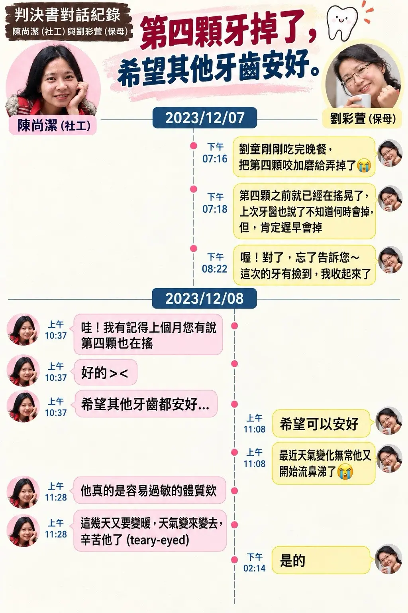
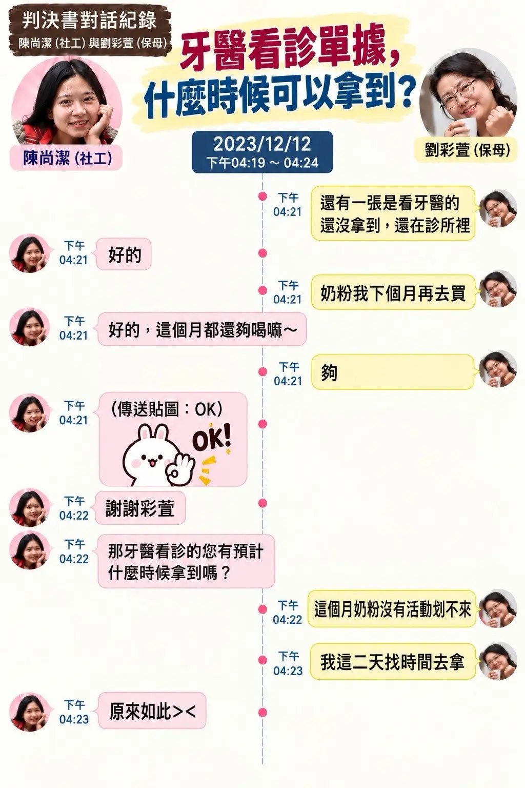
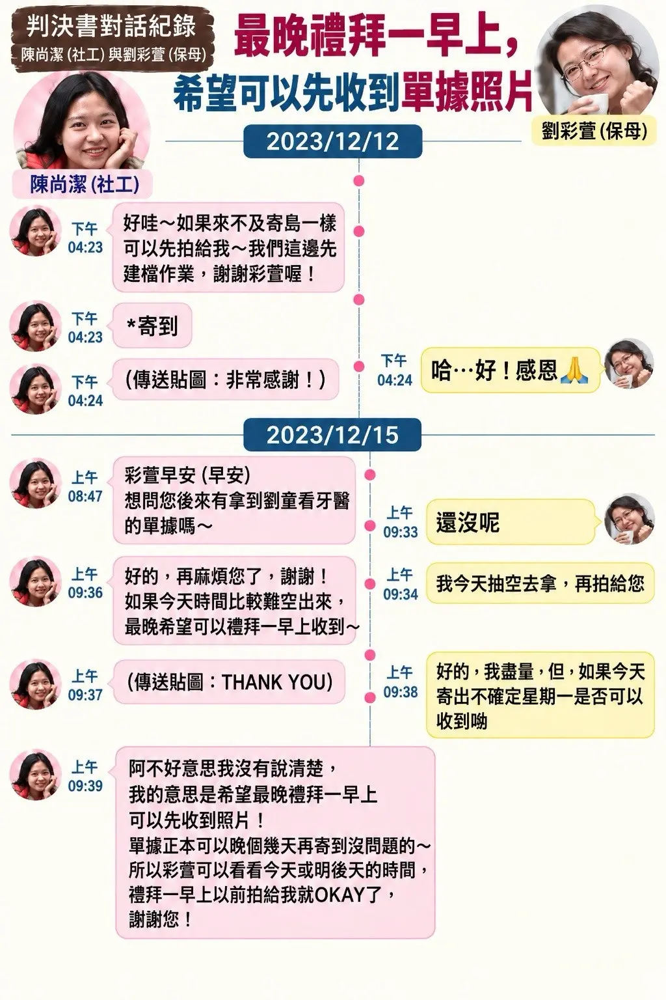
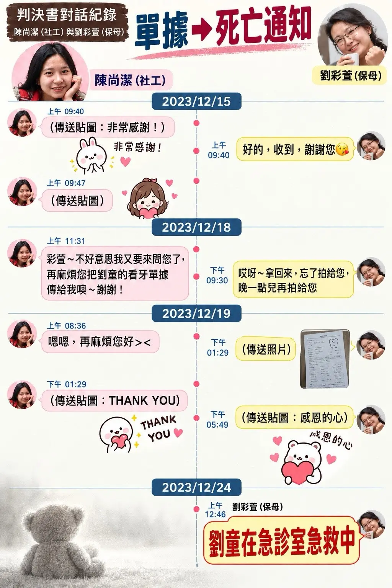

有人说，剀剀的伤是在「12月没人接触」的时候最惨。
图中内容撷取自判决书所载通讯纪录，是社工陈尚洁在12月得知剀剀掉了第四颗牙后，与刘彩萱的LINE对话。
JUDGMENT-RECORDED LINE EXCHANGE
17天里，对话追踪了什么？
依日期阅读判决书所载对话整理：从第四颗牙掉落，到牙医单据反复催取，再到12月24日的死亡通知。




图片为判决书所载对话的视觉整理，方便依时间阅读；涉及事实与责任的认定，仍以法院判决及正式卷证为准。
TESTIMONY-BASED RECONSTRUCTION
这17天，剀剀可能经历了什么？
这不是情节创作，也不是逐日断言。以下只把法院认定、通讯日期、证人亲自见闻与专业意见接起来；「可能」代表证据可支持的方向，不代表已能确认某日的具体动作或行为人。
第四颗牙掉落；孩子已呈现慢性营养不良外观
通讯纪录：12月7日刘彩萱告知第四颗牙掉落；12月8日陈尚洁回复「希望其他牙齿都安好」。
吕立医师：依12月8日照片说明，孩子仅著尿布、目光望向远方、身形极度消瘦；这类慢性营养不良需要数月形成，不是当天才出现。
可支持的判读：第四颗牙不是孤立症状，应与先前三颗牙、体重与身形下降、既有瘀伤一并视为风险累积。
没有人以新的直接接触确认孩子；对话转向牙医单据
通讯纪录：12月12日至15日反复询问牙医单据、何时取回，以及能否先传照片建档；公开资料未见这段期间完成陪诊、向诊所直接核实或重新实地访视。
蔡函妤牙医：她在11月23日只接触孩子约15分钟，不知道其脆弱家庭与全日托育背景；三颗乳牙脱落不符合单纯磨牙，因可能涉及外力、神经或全身性疾病，曾建议转医学中心。
不能反推：LINE没有提及某一天，不等于能证明那天没有伤害；同样也不能只靠沉默编出每天发生了什么。
收到的是单据照片，不是转诊结果，也不是孩子的安全确认
通讯纪录：12月19日收到牙医单据照片。现有公开材料仍不足以确认医学中心转诊是否完成、检查结果为何。
证词交叉：蔡函妤与急诊医师黄圣心都否定「磨牙足以造成多颗乳牙脱落」；吕立医师另依死后影像指出，下排三颗门牙断裂、一颗连牙根脱落，机转不符磨牙或营养不良。
经费界线：这张牙医单据不能直接等同刘彩萱申请某一笔补助；施盈如所述出养前健检核销与托育费安排，是另外两种款项脉络。
直接观察的空窗没有补上
林心慈：原订12月进行居托再访，因保母称家中有人确诊而未完成；待要再访时，孩子已死亡。她也证称自己没有孩子完整健康资料、资讯多由保母转述，并认为儿福联盟社工掌握的资讯最完整。
制度缺口：一边相信「社工每月会访」，另一边没有与该社工直接联系；在这段空窗中，没有形成第二个能独立核对孩子状况的视角。
仍未知：公开资料不足以逐日判断12月20、21、22日各自发生的行为。
中午后活动力不佳；法院认定犯行持续至晚间约10时
被告庭上回答：检察官问刘彩萱是否曾告诉辩护人孩子「中午以后活动力不佳」，她回答「有」。这只能证明她在庭上承认曾作此陈述，不是连续生命征象纪录。
法院认定：主案一审新闻稿认定两名保母共同妨害自由、伤害与凌虐的犯罪期间延续至12月23日晚间10时许；这是期间终点，不代表法院公开认定10时整发生某一特定动作。
公开纪录从「没心跳了」进入CPR、119与急诊
黄圣心医师：证称孩子到院前已无呼吸心跳、体温24°C，外观明显消瘦且有多处异常伤势；口腔未见支持「溢奶」的迹象。她同时说明，急诊当下不负责作最终死因判定。
法院认定：后续法院将死亡连结到长期营养不良、身体衰弱、至少42处虐待性伤势与低血容性休克，而不是把它写成单一的喂奶意外。
仍无法确定：最后一餐、最后一次伤害、心跳停止起点及最后数小时每人的完整动作，不能由目前公开资料补写。
可被还原的，不是每天的剧本，而是风险轨迹：第四颗牙与慢性消瘦已可见，转诊与安全确认没有形成闭环，外部直接接触中断，法院认定的犯行仍在延续，直到急诊才看见孩子最后的身体状态。
把证人放回各自能证明的位置
每名证人只看见一段；交叉比对能补出风险轨迹，不能把任何一人的证词扩张成完整现场。
吕立｜儿少保护医疗
能证明：由照片、病历、影像与多专科讨论，说明慢性营养不良、牙齿伤势及至少42处确定伤势。
不能证明：每一处伤精确发生在哪一天、由哪一人造成。重要证词摘录
可见伤势的范围
「A童全身至少有42处确定的伤势，有些愈合后就看不到了，目前呈现的只是死亡时看到的。」
2025/04/29 · DAY5 record-08｜伤势数量与可见范围
磨牙说的医学界线
「也从未听过磨牙磨到掉牙，此不符合医疗科学证据。」
2025/04/29 · DAY5 record-08｜牙齿伤势机转
断牙与牙根的影像判读
依死后电脑断层（PMCT），A童下排门牙有三颗断裂（编号：71、72、81）、一颗门牙脱落（编号82），为完全不见，连牙根都不见。
另三颗是牙龈有断痕，断一半，不是死前马上的，牙龈还长上去。
吕立｜PMCT牙齿判读（DAY5，record-08）生长曲线与慢性营养不良
A的生长曲线身高、体重有掉下来到不同区间，原在50-85%区间但掉下来，体重会先掉，再掉身高。
营养不良时，营养会先留给头脑，其为慢性营养不良。
吕立｜12月8日照片与慢性营养不良（DAY5，record-08）蔡函妤｜儿童牙科
能证明：11月23日短暂看诊；否定三颗乳牙由单纯磨牙造成，并建议医学中心检查。
不能证明：完整照顾背景；单次看诊不能取代长期个案追踪。重要证词摘录
保母主诉不等于诊断
「医疗诊断讲求证据。磨牙是保母刘彩萱的主诉，并不是我的诊断。」
2026/01/22 · 蔡函妤｜主诉与医疗诊断的界线
单次看诊与长期追踪
【检察官】你当时知道刘童是来自脆弱家庭，受媒介出养，并且从9月就开始被刘彩萱已经照顾3个月了，而且是全日收托，与原生家庭脱离、9/25额头有大片瘀青、10/23精神不佳，且社工要访视时保母用停电、家中小孩生病等理由推托访视。如果你知道上述状况，你会怀疑这是儿虐？你会通报吗？
【证人-蔡函妤】我觉得牙医师跟社工的职责范围与取得资讯量不同。我只有单次约15至30分钟的医疗接触，看不到生活环境，也不能把衣服掀开做全身检查；社工负责长期个案管理与访视，接触面向、时间及资讯量无法直接类比。
蔡函妤｜2026/01/22 · 073–074转诊理由与无法确认之处
【辩护人】您为何建议去做全身检查？
【证人】孩童若不到换牙年龄就有牙齿脱落，一次脱落3颗，我怀疑可能有全身性问题。在牙医诊所内没有办法做血液检查，所以推荐到医学中心去检查。
【证人】掉牙不太可能是磨牙造成的，但是因为刘童他来时，口内的伤口已经愈合，我没看到受伤的状况，所以无法确认掉牙的原因。
蔡函妤｜转诊理由（2026/01/22，034–037）主诉转换与资讯缺口
【检察官】当天刘彩萱带刘童就诊的主诉是什么？
【证人】她挂号时说刘童磨牙造成牙齿脱落。我们说这不太可能，她后续说小朋友会时常跌倒、撞墙自摔。
【检察官】刘彩萱有说刘童一晚掉了3颗牙吗？
【证人】没有。
蔡函妤｜说词转换与资讯缺口（2026/01/22，053–056）配合看诊与「异常安静」的回想
【受命法官】刘童当下看牙医时，和一般小孩有何不同？
【证人-蔡函妤】他都在配合，一般小孩会哭闹。
【受命法官】你的笔录提到「异常安静」，你还记得他看诊的情形吗？
【证人-蔡函妤】我是看到新闻，事后回想才觉得他异常安静。看诊当下我担心他是全身性的问题。
【受命法官】看诊过程从头到尾，刘童有展现任何反抗的反应吗？
【证人-蔡函妤】没有。
蔡函妤｜2026/01/22 · 103–108警询与庭上记忆的差异
【受命法官】本案发至今已经两年多，你可能已经有些记忆模糊。你当时在笔录里说「有，我有看到头部有伤、头发里有瘀伤、皮肤还有皮肤病」。但是你今天说你没有提及。依据经验法则，当时的记忆应该比较清楚。所以，法官没有要追究证人责任的意思，因为这部分与你先前笔录不同却又涉及重要事实，所以要和你确认。
【证人-蔡函妤】可能以当时警询笔录为准；时间已经过了比较久，我现在记不太清楚。
蔡函妤｜2026/01/22 · 113–114林心慈｜居托访视
能证明：12月再访未完成；没有孩子完整健康资料，资讯多由保母转述，也未与儿盟社工建立联系。
不能证明：直接接触空窗内，每一天具体发生了什么。重要证词摘录
12月再访未完成
「保母说家中有人确诊……要再访时，小孩已经……。」
2026/01/22 · 林心慈｜12月再访未完成；原笔记保留未完整处
健康资讯来自谁
「没有，全部都是保母口述。」
2026/01/22 · 林心慈｜被问及是否持有孩子资料
联系方式与健康资料
【检察官】那你和儿福联盟的陈社工有任何联系方式吗？
【证人】没有。
【检察官】你们有任何刘童的健康状况的资料吗？
【证人】只有一个勾选表，由刘保母所填写。
林心慈｜联系与健康资料（2026/01/22，117–120）照片未互通、资讯经过转述
【受命法官】被告有传访视照片给你吗？
【证人】没有，案发前都没有联络过。
【受命法官】你的资讯都是二手的吗？由社工告诉保母，保母再告诉你？
【证人】是的。
林心慈｜照片未互通、资讯来源（2026/01/22，185–194，节录）黄圣心｜急诊医师
能证明：亲见到院前无呼吸心跳、24°C、明显消瘦与多处异常伤势；急诊观察不支持溢奶说。
不能证明：最终死因；须与法医、病历和法院认定并读。重要证词摘录
到院状态与保母说法
「我们和保母确认病童到院前没有呼吸心跳，保母说是溢奶刚发现就送来。」
2025/12/11 · witness-04｜到院状态；「溢奶」属保母转述
急诊亲见的口腔与体温
「有，因为病童体温只有24度。打开嘴没有溢奶的迹象，所以应不符合保母的说法。」
2025/12/11 · witness-04｜急诊医师亲见与判读
急诊的死因判定界线
【检察官】那你们有去确认死因吗？
【证人】当下有拍照，因为是到院前死亡，急诊不会做死因判定。
【检察官】在笔录中有和保母说病情严重、伤势不寻常，符合典型儿虐特征要通报。你们急诊团队中有人认为像是溢奶吗？
【证人】没有。
黄圣心｜急诊的判定范围（2025/12/11，027–031）凌晨2:25与家属说明
【检察官】按照纪录在案发当日12月24日凌晨2:25有与外婆解释伤势？
【证人】我们和外婆说明因急救时长过长，效果不佳，建议放弃急救。
【检察官】你们解释伤势时被告在旁边吗？
【证人】我已没有印象。
【检察官】你们有像外婆或社工解释可能是溢奶吗？
【证人】没有这样说。
黄圣心｜凌晨2:25与家属说明（2025/12/11，033–038）到院与社工到场时间：护理纪录的限制
[提示万芳医院护理纪录单]
【辩护人】凌晨00:43是保母陪同就医，社工是01:49来，但是万芳医院护理纪录单01:09的社工纪录上写联络社会局社工，为何会与事实不一致？
【证人-黄圣心】护理纪录单不是我写的，我不知道。
黄圣心｜2025/12/11 · 051–053晚间10时说法：医师追问与社工是否在场
【受命法官】急救过程有和社工或保母接触吗？
【证人-黄圣心】有。
【受命法官】那有感觉他们想推卸责任吗？
【证人-黄圣心】有。保母说当晚10点有喝奶，还有呼吸，后来才越来越喘。但病童12点来早已经到院前死亡。
【受命法官】你们有对她的说法质疑吗？
【证人-黄圣心】我印象有。有再和他确认，但保母一直强调10点喝奶还有呼吸，后来才越来越喘。似想引导死因为呛咳。
【受命法官】保母交代死因时社工在场吗？
【证人-黄圣心】没有，这是一开始来的时候。
黄圣心｜2025/12/11 · 083–090许倬宪｜法医
能证明：说明深部出血、水肿、束缚、久站与营养状态如何共同造成低血容性休克。
不能证明：捆绑多久、伤势精确时点；证人多次保留为事实调查或无法判断。重要证词摘录
无法判定捆绑时长
「会，但我不知道捆绑多久。看不出来，甚至这张照片根本看不出瘀伤。」
2025/04/29 · DAY5 record-03｜不能由单张照片推定捆绑时长
低血容性休克的机转
「久站血管里的水分会跑出去，捆绑会造成大范围（面积）血渗出，死者的血管内的液体已经不足了。」
2025/04/29 · DAY5 record-03｜低血容性休克的机转说明
外观与深部伤势
【证人】要跟大家说明，伤的大小仅供参考，伤害要从里面来看
【证人】这个个案不会著重在大大小小的伤口
许倬宪｜外观与深部伤势（DAY5，record-03）营养状态与水肿
【检察官】死亡时营养不良和低血容性休克的关系？
【证人】代表肝脏制造蛋白质能力低，渗透压不足，水分不能保存。肺炎有时是个人免疫力降低
【检察官】久站会出血吗？
【证人】容易造成水肿，会造成淤积更严重。不会造成出血，会造成水肿，血管没有破裂，所以看到是透明的，压力会造成破裂
许倬宪｜营养状态与水肿（DAY5，record-03，节录）施盈如｜脆弱家庭服务
能证明：10月已对保母说法表达疑虑，并形成由陈尚洁追踪孩子、自己追踪原生家庭的分工。
不能证明：12月牙医单据的款项用途；健检核销与托育费是不同脉络。重要证词摘录
10月疑虑与追踪分工
「我对陈说有疑虑。陈说因为孩子有状况，她考虑要停止出养的媒合。所以我和陈分工，请陈继续追踪孩子的状况。」
2025/11/27 · witness-02｜10月疑虑与实际追踪分工
出养前健检的经费来源
「因为刘童不是被政府安置，所以他的健检无法使用政府的安置经费核销，所以才用社会局的社会捐助款处理。」
2025/11/27 · witness-02｜出养前健检款项；非12月牙医单据
费用协助与核销记忆界线
【检察官】本案出养前有陪刘童去做健检吗？
【证人】第2次转介出养前有协助刘童健检，但不是我实际陪伴，因为儿盟有一些项目需要孩子的体检报告，但是检查的费用满高的，儿盟那边表示无法处理此笔款项，因此我有和家属讨论协助费用。
【检察官】这笔费用是用什么项目核销？
【证人】我就送出给会计办理核销，时间久我已不记得当初核销细节。
施盈如｜健检款项的用途与记忆界线（2025/11/27，016–019）无照顾者资讯、透过陈追踪
【检察官】刘童委托给儿盟后，你有办法去访视他吗？
【证人】我根本没有后续照顾者的资讯，甚至不知其全名，只知道姓刘。
【受命法官】在这个脆家未结案前，是否有包含刘童出养前身心状况的追踪？
【证人】我当时是透过陈社工了解。
【证人】对，所以那次（电话联系）才会分工，当时分工，由他去追踪孩子（刘童），我去追踪原生家庭的状况。
施盈如｜无照顾者资讯、透过陈追踪（2025/11/27，048–049、099–102，节录）托育费用比较：证人记忆不是核定金额
【辩护人】你评估刘童出养，为何当时没有选择给资源让刘童继续留在周保母照顾？
【证人-施盈如】在我和外婆讨论时，社会局只能维持目前提供的资源，但这对外婆的负担没有帮助，所以才有儿盟的安置方案。如果孩子一个月保母费用，可能是4 万好了，详细金额我已记不清，政府补助大概只能出一半，外婆还是要自己出剩下的一半，但是儿盟可以负担全部的保母费用... （略）。
施盈如｜2025/11/27 · 069–070分工后的责任、信任与电话纪录
【受命法官】所以你认为他是追踪孩子的主要负责人？
【证人-施盈如】因为那次讨论。
【受命法官】那次讨论之后，你认为你就没有责任去追踪这个孩子吗？
【证人-施盈如】[哽咽] 我不想说这个事件中我完全没有责任。
【受命法官】你和陈讨论之后，你有去获取有关是谁在何处照顾刘童的资讯吗？还是就相信陈会去追踪？
【证人-施盈如】对，陈社工是一个专业人员，依照对社工职业的信任，我很自然地认为她会去追踪。
【受命法官】你说你们有讨论到分工，有没有什么证据，例如line讯息，可以确认当时有此分工？
【证人-施盈如】当天的对话是透过办公室电话，树莺社福中心的办公室电话都有相关资料，但是目前已经很久了，我不知道还有没有保存。
施盈如｜2025/11/27 · 103–110王凯弘｜同住家属
能证明：他在家的有限时间内亲自看见、听见的情形，以及刘彩萱曾向他提出的说法。
不能单独证明：孩子每日饮食、喝水、伤势来源与完整照顾经过；他证称自己几乎没有整日待在家，也未看过孩子吃饭或喝水。重要证词摘录
在家时间的限制
【审判长】在112年（2023年）的9月到12月，你一个月里面可以都待在家里（指不用出门工作或上课）的时间有几天？
【证人】几乎没有。
王凯弘｜《报导者》第一周庭审整理 · 第三日没有看过孩子吃饭或喝水
【审判长】你在住处有看见A童怎么吃饭的吗？
【证人】没有看过他吃饭。
【审判长】有看过怎么喝水吗？
【证人】我没看过他喝水。
王凯弘｜《报导者》第一周庭审整理 · 第三日伤势是否就医：回答不知道
【审判长】A童手上有结痂的洞，就这件事情有去看医生吗？
【证人】不知道，我只知道有牙医、带去打预防针，还有社工说可能会有医疗团队来。过年后可能就可以不用带（A童）了！
王凯弘｜《报导者》第一周庭审整理 · 第三日为何知道有社工
【检察官】起初不知道A童是社福机构托养，为何知道有社工？
【证人】我是知道她一定会有人可以去反映，我没有说谎，我下意识觉得是社工。
王凯弘｜《报导者》第一周庭审整理 · 第三日布巾包裹是否奇怪
【辩护人】刘彩萱把小孩用布巾包裹成那样，你难道不觉得奇怪？
【证人】我不觉得，因为A童半夜会撞来撞去的，怕他受伤，尿得全身都是，又弄大便。我觉得那个东西是为了保护他，我不觉得奇怪。
王凯弘｜《报导者》第一周庭审整理 · 第三日以自身童年经验反问防撞说法
【法官洪宁雅】你小时候学走路或跌跌撞撞的时候，刘彩萱会不会用布巾或水果网套，绑住你的手脚，让你不要碰撞？
【证人】不会啊，我不会撞来撞去。
王凯弘｜《报导者》第一周庭审整理 · 第三日工作作息与照顾参与
【问】2023年9月至12月住处与工作作息？是否参与照顾？
【王○弘】住6号3楼与母亲同住；每月出差两、三次，南北送货，晚间约11、12点回家。不参与照顾，多为拿货或晚餐时经过托育空间。
王凯弘｜本站第三日旁听整理 · 王○弘章节06跌倒地点的两种说法
【问】看过跌倒吗？
【王○弘】称11月底或12月初出门穿鞋时，听到声音并以余光看到人影倒下；晚间又听母亲说是在公园跌倒。
【比对提醒】同段同时出现家中所见与公园转述，须核对是否为两次事件、转述差异或记录误植。
王凯弘｜本站第三日旁听整理 · 王○弘章节06浴巾包裹的观察条件
【问】知道捆绑或用毛巾固定吗？
【王○弘】称不知道捆绑；曾在半夜约2点看见孩子被浴巾包著，并说因父亲睡在客厅而不敢开灯。
【比对提醒】证人同时比较浴巾颜色，且叙述涉及浴室、电脑房与不同姿势；光线、动线与先后仍需原始证据核对。
王凯弘｜本站第三日旁听整理 · 王○弘章节06头套时间前后差异
【王○弘】一处称11月底或12月初跌倒后受母亲请托订头套；另一处称约9、10月间因孩子半夜撞头而搜寻订购。
【比对提醒】须确认是两次搜寻或订购，还是同一事件的时间陈述不同。
王凯弘｜本站第三日旁听整理 · 王○弘章节06–07语言陈述的前后张力
【王○弘】先称第一次见面时听见孩子慢慢说出五字脏话，之后称语调不清楚但听得出来；原记录末段另载「没听过A童讲话」。
【比对提醒】末句是否漏字及各段是否指同一时点，均须核对正式笔录；未核对前不能自行判定真伪。
王凯弘｜本站第三日旁听整理 · 王○弘章节07–08住处空间代号不一致
【记录A】前文定义6号3楼为乙地、4号3楼为丙地。
【记录B】跌倒段落却记作「回到6号3楼（丙地）」。
【比对提醒】可能是原记录误植，也可能是陈述混淆；未核对正式笔录前不自行更正。
王凯弘｜本站第三日旁听整理 · 王○弘来源核对点04是否看过头套的说法差异
【记录A】前文称曾在电脑房看过朋友送的蓝色头套。
【记录B】检方反诘段落原记录另载「没有看过头套，大小不太知道，是儿童用的」。
【比对提醒】尚待厘清「没看过」是指没看过头套物件，或没看过孩子佩戴；不能替原文补入限制。
王凯弘｜本站第三日旁听整理 · 王○弘章节06–07庭讯时间记载本身前后不合
【记录A】王○弘章节开头记载14时24分入庭。
【记录B】同章稍后又记「14时17分休庭，14时25分入庭」。
【来源界限】这是原始旁听记录的时间顺序问题，不是王凯弘证词内容；本站不自行改为15时17分或其他时间。
第三日旁听整理 · 王○弘章节06另案伪证调查：只呈现当时程序状态
【检方】庭上表示要以另案伪证案件弹劾证言。
【王○弘】在审判长提醒可能影响另案后仍表示愿意说明，并称当时仍在侦办、尚未起诉。
【证据界限】「尚未起诉」只描述2025年4月25日当时状态；不能据此推论另案最终结果，也不表示本案法院已判定证词真伪。
王凯弘｜本站第三日旁听整理 · 王○弘章节07最后一天：返家后才得知
【问】何时知道A童死亡？
【王○弘】案发当天回家，父亲在走廊说「出事了」，并转述孩子噎奶死亡；他担心在警局的母亲，翌日才见到她。
【证据界限】「噎奶死亡」是父亲告知内容的再次转述，只能证明证人曾如此回答，不能证明实际死因；「案发当天」也不等同媒体另载的12月25日凌晨3时。
王凯弘｜本站第三日旁听整理 · 王○弘章节06资料来源：庭审旁听整理；各摘录附日期与纪录位置。
THE FINAL DAY · EVIDENCE LAYERS
最后一天：从中午后，到12月24日凌晨
这一段刻意不用戏剧化旁白。每个节点分开标示「法院认定」「庭上回答」「证人亲见」与「他人转述」，让已知与未知不被混在一起。
证人内容依本站获授权旁听整理摘述，并非官方逐字稿；如与正式笔录或判决原本不一致，应以正式司法文书为准。
被告庭上回答 「活动力不佳」已被提出
DAY9中，检察官问刘彩萱是否曾向辩护人表示孩子「中午以后活动力不佳」，她回答「有」。这是被告对先前说法的承认，不是医疗人员当时的生命征象纪录。
kaikai-day9-20250506/#qa-c51法院认定 法庭提示纪录 纪录已是「没心跳了」与开始救援
DAY1公开旁听纪录所整理的12月23日对话载有刘彩萱「没心跳了」、刘若琳「继续救」；不争执事项另载刘彩萱配偶为孩子CPR并拨打119。它能证明危急后的救援节点，不能倒推出此前每一分钟。
kaikai-day1-20250422/#full-record黄圣心医师亲见 到院前已无呼吸心跳；急诊未见支持溢奶的迹象
黄圣心证称，保母主述孩子晚间10时喝奶时仍有呼吸、之后越来越喘；但医师亲见的是到院前已无呼吸心跳、体温24°C，打开口腔没有溢奶迹象，急诊团队也没有人认为像是溢奶。前者是保母说法，后者才是医师的现场观察。
kaikai-final-chapter/witnesses/#witness-04与家属讨论急救
黄圣心证词中的检方提问提及凌晨2:25与外婆说明；她回答，因急救时间过长、效果不佳，建议放弃急救。对被告当时是否在旁，她表示「我已没有印象」。此处保留提问所载时间，不据此裁定死亡时刻。
2025/12/11 · 黄圣心 · 033–038
同一夜，五种证据各自回答什么？
保母对急诊医师的说法
晚间10时喝奶、仍有呼吸，之后越来越喘；另称是溢奶。
只能证明她曾如此陈述，不能直接当作客观经过。黄圣心的急诊观察
到院前无呼吸心跳、24°C；口腔无溢奶迹象，外观消瘦且多处伤势可见。
能说明到院状态；急诊当下未作最终死因鉴定。许倬宪、吕立的专业意见
深部出血与水肿、束缚及久站机转、慢性营养不良共同放入低血容性休克脉络。
能说明机转与累积性；不能逐分钟还原最后数小时。主案判决的法律事实
犯行持续至晚间约10时；孩子因长期营养不良、衰弱与至少42处伤势，于24日凌晨因低血容性休克死亡。
新闻稿仍提醒：若与判决原本不一致，以判决原本为准。王凯弘的「返家后得知」说法
本站第三日旁听整理记载，他在案发当天返家后，才由父亲得知「出事了」及孩子噎奶死亡；翌日才见到母亲。这是父亲告知内容的再次转述，不能证明实际死因。
能证明他如此陈述，不能证明最后数小时或「噎奶死亡」为真；后者亦与急诊所见无溢奶迹象不一致。第三日旁听整理证词摘录
【问】何时知道A童死亡？
【王○弘】案发当天回家，父亲在走廊说「出事了」，并转述孩子噎奶死亡；他担心在警局的母亲，翌日才见到她。
【证据界限】这是父亲告知内容的再次转述，只能证明证人曾如此回答，不能证明实际死因；「案发当天」也不等同媒体另载的12月25日凌晨3时。
【黄圣心医师庭上证词】打开口腔没有溢奶迹象；急诊团队没有人认为像是溢奶。
【比对结果】「吐奶噎死」是王凯弘转述父亲的说法，与急诊医师亲见不一致，不能当作已证实死因。
王凯弘｜本站第三日旁听整理 · 王○弘章节06证据可以支持的方向
- 孩子不是送医前才突然从健康状态恶化；慢性营养不良与多处伤势早已累积。
- 12月23日中午后已有活动力不佳的描述，后续进展到无心跳与急救。
- 急诊观察不支持「溢奶」说法；最终死因由后续鉴定与法院认定。
公开资料仍不能补写
- 最后一餐的内容与确切时间。
- 最后一次伤害、急性恶化的触发点与心跳停止时间。
- 最后数小时每个人在何处、做了什么，以及每一处伤由谁造成。
所以，「最后一天可能发生了什么」最精确的回答是：一名已因长期营养不良与反复伤害而高度脆弱的幼儿，在12月23日中午后出现明显状态下降，之后进入心肺停止；但从状态下降到心跳停止之间的具体事件链，公开证据仍留有关键空白。这个空白应被标示，而不应被想像填满。
为什么12月会最惨？
在得知剀剀掉了第四颗牙后，社工陈尚洁持续追踪的，究竟是什么？
也许，大家心中已经有答案。
单据？VS 孩子？
单据
- 索取了哪些资料？
- 何时收到、何时完成确认？
- 纪录是否只停留在行政流程？
孩子
- 第四颗牙掉落的原因是否被查证？
- 是否实际确认就医、转诊与孩子状况？
- 是否重新评估访视与责任通报？
这篇贴文不代替法院认定，也不把提问写成定罪；它只是把判决书所载对话放回时间线，追问儿少保护工作在最关键的17天里，究竟把注意力放在哪里。
EVIDENCE CROSS-CHECK
把三条线分开，再放回同一条时间轴
牙齿警讯、经费安排与单据追踪不是同一件事。以下区分判决记载、庭上证词与仍待原始卷证核对的事项，避免用行政往来取代孩子安全的查证。
从三颗牙到第四颗牙：说法是否经过独立查证？
现有时间轴显示：11月19日保母称孩子因严重磨牙掉三颗牙；11月23日牙科看诊；12月7日再称第四颗牙掉落。关键不只在「有没有看牙」，而在转诊建议、病历与掉牙原因是否有人直接向医疗端核实。
展开证词比对
- 周姓前保母：证称转托前未见外伤，提供健康与生活状况的前后对照基准。
- 蔡函妤牙医：证称磨牙不足以解释一次脱落三颗乳牙，并曾建议至医学中心检查；她也强调单次牙科接触不能与社工长期个案管理相比。
- 黄圣心医师：证称磨牙不会造成牙齿脱落，与牙医对「磨牙说」的医学质疑相互勾稽。
- 陈尚洁：庭上称曾与同组同仁讨论，认为保母表达清楚、未达通报标准，因此未陪诊或通报。
kaikai-final-chapter/medical-responsibility/
至少有两种款项脉络，不能混成「同一笔申请」
出养前健检：施盈如证称，因孩子未进入政府安置流程，健检费用曾以社会局社会捐助款办理核销。托育安排：她另证称政府补助可能只负担部分保母费，儿盟方案可负担全部托育费。这两者都不同于12月LINE中反复索取的牙医看诊单据。
经费与单据：分项核对
| 项目 | 目前材料能说明 | 仍需核对 |
|---|---|---|
| 牙医单据追踪 | 12月反复催取，12月19日收到照片。 | 申请人、用途、是否请款及付款凭证。 |
| 出养前健检 | 施盈如所述费用协助与社会捐助款核销。 | 核销项目、金额、日期及原始凭证。 |
| 托育费安排 | 证人所述补助与儿盟方案负担脉络。 | 实际申请、核定与付款纪录。 |
为什么这项区分重要？
- 「申请经费」「托育费」「健检核销」「牙医单据建档」须各自标明用途、申请人、付款人、日期与凭证。
- 目前公开整理不足以证明12月追单就是为刘彩萱申请某一笔特定补助，本文不作此推定。
- 真正可核对的问题是：行政资料被持续催取时，孩子本人是否也获得同等强度的访视、陪诊、转诊确认与风险升级。
kaikai-final-chapter/witnesses/#witness-02
「谁是主责」不能取代「谁实际掌握资讯」
施盈如证称，10月已对「自伤、脏话、额头伤」等说法表达疑虑，并形成由陈尚洁追踪孩子、自己追踪原生家庭的实际分工；她也称未取得后续照顾者完整资料，只能透过陈尚洁了解孩子状况。
展开责任链比对
- 施盈如：把孩子后续状况交由陈尚洁追踪，自己追踪案家其他需求。
- 蔡函妤：牙医只能短暂看诊，无法看见生活环境；社工掌握跨月、跨访视的资讯。
- 陈尚洁：称相信安全网中若有人认为疑似受虐就会通报。
- 一审判决（尚未定谳）：聚焦警讯累积后是否查证、加访、取得医疗资讯并依法通报，而非要求社工自行作医疗诊断。
kaikai-final-chapter/
本文整理证词与争点，不代替法院认定；个别责任仍以法院判决为准。
SHARE KIT
繁／简社群主视觉
4:5直式版，适合Threads与行动装置阅读；图像不使用儿童真实照片或伤势影像。

{kind=link}
COURT DATE · UPDATED
9月16日｜陈尚洁案二审准备程序
#9月16日儿福联盟社工陈尚洁二审开庭
查看案件进度 →本案仍在审理，请尊重司法程序与无罪推定。庭期及旁听安排以法院当日公告为准。